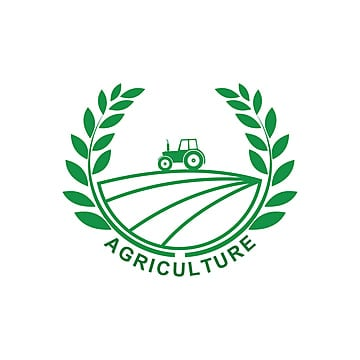

Infrastructure Needs
New training halls, guest houses, lab equipment, and demo unit expansion are required to meet the growing demand.

Human Resource
Requirement of SMSs, Technical Assistants, ICT experts, and regular staff training sessions.

Farm Technology
Mechanization tools, solar pumps, drip irrigation, and protected cultivation units.

Digital & ICT
High-speed internet, video production tools, mobile apps, and better outreach via social media.

Extension & Outreach
More field schools, mobile soil testing van, printed learning materials, and media tie-ups.

Financial Support
Increased funding for operations, solar energy setup, and agri-exhibition organization like SATPUDA AGROTECH.